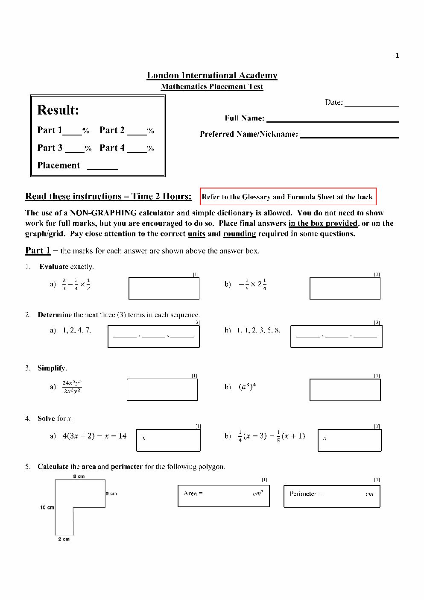
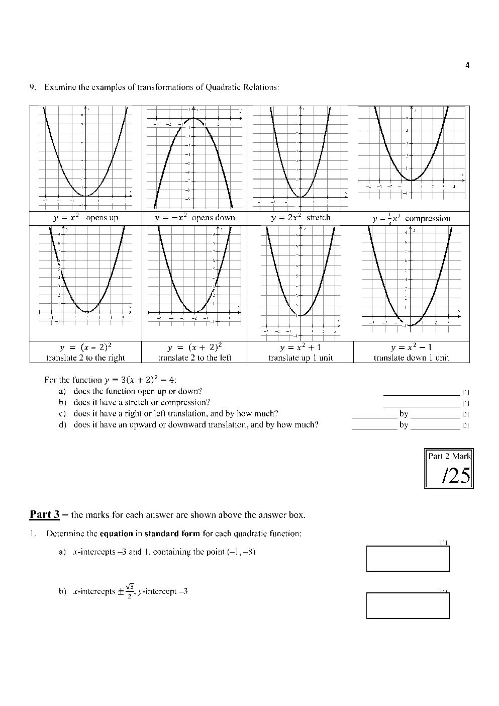
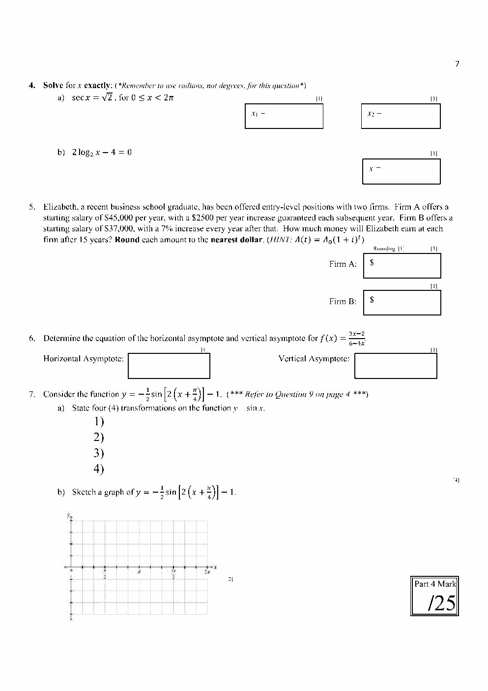
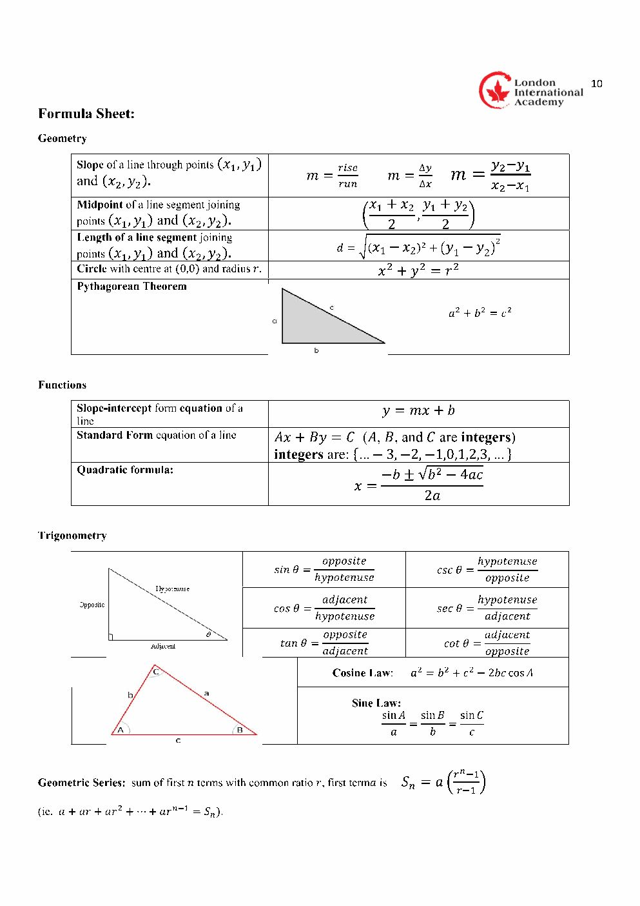

LIA Maths Placement Prep · Classwork
Math sample · Решения с пояснениями
От точных дробей до графика синусоиды — все задания из предоставленного PDF с разбором каждого шага.
- прочитать английское условие и выбрать нужный способ решения;
- получить точный ответ, проверить его и указать единицы;
- объяснить преобразования функций и построить синусоиду по опорным точкам.
Как работать
- Сначала реши на бумаге и введи ответ.
- Если застряла, открой подсказку. Затем проверь страницу.
- Открой разбор и сравни ход решения со своим.
Ввод: дроби 7/24, число π как pi, например 7*pi/4. В числовые поля не добавляй единицы. Ответы сохраняются в этом браузере.
Это учебный воркшит по четырём страницам образца (печатные страницы 1, 4, 7, 10), а не полный тест LIA. Процент в конце относится к полям этого воркшита, а не к официальной шкале теста. Просмотр разборов отмечается отдельно.
1. Дроби и порядок действий
b) −3/5 × 2¼
Evaluate exactly — вычисли точно: оставь дробь, не округляй.
Подсказка · Hint
Пошаговое решение · Worked solution
a) Почему ответ 7/24
- Сначала перемножаем дроби: (3/4) × (1/2) = 3/8. Числитель умножаем на числитель, знаменатель — на знаменатель.
- Теперь 2/3 − 3/8. Общий знаменатель — 24: 2/3 = 16/24, 3/8 = 9/24.
- Вычитаем только числители: (16 − 9)/24 = 7/24.
a) 7/24
b) Как работать со смешанным числом
- 2¼ = 2 + 1/4 = 9/4.
- (−3/5) × (9/4) = −27/20. Минус на плюс даёт минус.
- 27 и 20 не имеют общего делителя больше 1. Дробь уже несократима; также можно записать −1 7/20. В поле используй −27/20.
b) −27/20
2. Продолжи последовательности
b) 1, 1, 2, 3, 5, 8, …
Term — член последовательности; next three terms — три следующих члена.
a) Три следующих члена
b) Три следующих члена
Подсказка · Hint
Пошаговое решение · Worked solution
a) Растущая разность
- 2 − 1 = 1; 4 − 2 = 2; 7 − 4 = 3. Прибавляем последовательно +1, +2, +3.
- Продолжаем закономерность: 7 + 4 = 11; 11 + 5 = 16; 16 + 6 = 22.
- Это не арифметическая прогрессия: разность здесь меняется. Для конечного списка возможны разные продолжения; используем простую закономерность, ожидаемую в таком задании.
11, 16, 22
b) Сумма двух предыдущих
- 1 + 1 = 2; 1 + 2 = 3; 2 + 3 = 5; 3 + 5 = 8.
- Далее: 5 + 8 = 13; 8 + 13 = 21; 13 + 21 = 34.
13, 21, 34
3. Упростить степени
b) (a³)⁴
Simplify — упрости; exponent — показатель степени.
Для a) запиши ответ в виде Cxᵐyⁿ.
Подсказка · Hint
Пошаговое решение · Worked solution
a) Разделяем коэффициенты и степени
- 24/2 = 12.
- x⁵/x² = x⁵⁻² = x³.
- y³/y² = y³⁻² = y¹ = y.
- Объединяем: 12x³y. Исходная дробь определена только при x ≠ 0 и y ≠ 0; ограничения сохраняются после упрощения.
a) 12x³y, при x ≠ 0, y ≠ 0
b) Степень степени
- (a³)⁴ означает a³ × a³ × a³ × a³.
- Складываем четыре тройки: 3 + 3 + 3 + 3 = 12; короткое правило — 3 × 4 = 12.
b) a¹²
4. Линейные уравнения
b) ¼(x − 3) = ⅕(x + 1)
Solve for x — найди x; expand the brackets — раскрой скобки.
Подсказка · Hint
Пошаговое решение · Worked solution
a) Собираем x в одной части
- Раскрываем скобки: 12x + 8 = x − 14.
- Вычитаем x и 8 из обеих частей: 11x = −22.
- Делим обе части на 11: x = −2.
- Проверка: 4(−6 + 2) = −16; −2 − 14 = −16.
a) x = −2
b) Убираем дроби
- Общий знаменатель 4 и 5 — 20. Умножаем ВСЮ левую и ВСЮ правую часть на 20.
- Получаем 5(x − 3) = 4(x + 1), то есть 5x − 15 = 4x + 4.
- Вычитаем 4x и прибавляем 15: x = 19.
- Проверка: (19 − 3)/4 = 4 и (19 + 1)/5 = 4.
b) x = 19
5. Площадь и периметр
Area — площадь; perimeter — длина всего контура; polygon — многоугольник.
Подсказка · Hint
Пошаговое решение · Worked solution
Площадь: большой прямоугольник минус вырез
- Полный прямоугольник: 8 × 10 = 80 cm².
- Вырез: ширина 8 − 2 = 6 cm, высота 10 − 5 = 5 cm. Площадь выреза 6 × 5 = 30 cm².
- Площадь фигуры: 80 − 30 = 50 cm². Проверка другим способом: верхняя полоса 8 × 5 и нижняя ножка 2 × 5 дают 40 + 10 = 50.
Area = 50 cm²
Периметр: обходим весь контур
- Неизвестная горизонталь: 8 − 2 = 6 cm; внутренняя вертикаль: 10 − 5 = 5 cm.
- Обходим шесть сторон: 8 + 5 + 6 + 5 + 2 + 10 = 36 cm.
- В площадь идут квадратные единицы cm²; в периметр — обычные cm.
Perimeter = 36 cm
6. Преобразования параболы
Opens up/down — ветви вверх/вниз; translation — перенос.
a) Ветви направлены…
b) Вертикальное преобразование…
c) Горизонтальный сдвиг…
d) Вертикальный сдвиг…
Подсказка · Hint
Пошаговое решение · Worked solution
Читаем коэффициенты
- a = 3 > 0: парабола открывается вверх.
- |a| = 3 > 1: вертикальное растяжение в 3 раза относительно y = x²; при одном и том же расстоянии от вершины высота утраивается. Парабола выглядит уже.
- x + 2 = x − (−2), поэтому h = −2: перенос влево на 2.
- k = −4: перенос вниз на 4. Вершина (−2, −4), ось симметрии x = −2.
Up; vertical stretch by a factor of 3; left 2; down 4.
7. Составь квадратную функцию
b) x-intercepts ±√3/2; y-intercept −3
x-intercept — пересечение с осью x (y = 0); y-intercept — пересечение с осью y (x = 0).
Здесь standard form означает y = ax² + bx + c. Введи коэффициенты, включая нули.
a)
b)
Подсказка · Hint
Пошаговое решение · Worked solution
a) От корней к уравнению
- Корни −3 и 1 дают y = a(x + 3)(x − 1).
- Подставляем точку (−1, −8): −8 = a(−1 + 3)(−1 − 1) = −4a. Значит, a = 2.
- (x + 3)(x − 1) = x² + 2x − 3. Умножаем на 2: y = 2x² + 4x − 6.
- Проверяем: при x = −3 и x = 1 получаем 0; при x = −1 получаем −8.
a) y = 2x² + 4x − 6
b) Разность квадратов
- На исходной странице корни записаны как ±(√3)/2, а не ±√(3/2).
- y = a(x − √3/2)(x + √3/2) = a(x² − 3/4).
- y-intercept −3 означает точку (0, −3). Подставляем: −3 = a(−3/4), поэтому a = 4.
- Раскрываем: y = 4x² − 3. Линейного слагаемого нет: b = 0.
b) y = 4x² − 3
8. Секанс и логарифм
b) 2 log₂ x − 4 = 0
Secant — секанс; radians — радианы; exactly — без округления.
Углы запиши в радианах, от меньшего к большему.
Подсказка · Hint
Пошаговое решение · Worked solution
a) От секанса к косинусу
- 1/cos x = √2, значит cos x = 1/√2 = √2/2.
- Опорный угол — π/4 (45°). Косинус положителен в I и IV четвертях.
- На промежутке 0 ≤ x < 2π решения: x₁ = π/4 и x₂ = 2π − π/4 = 7π/4.
- Нужны оба решения и именно радианы. Ответ 45°, 315° не соответствует требованию задания.
a) π/4; 7π/4
b) Что означает логарифм
- Область определения: x > 0.
- 2 log₂ x − 4 = 0 → 2 log₂ x = 4 → log₂ x = 2.
- Какое число получается при возведении 2 в степень 2? x = 2² = 4.
- Проверка: 2 log₂ 4 − 4 = 2 × 2 − 4 = 0; x > 0 выполнено.
b) x = 4
9. Зарплата: прибавка или процент
Subsequent year — следующий год; increase by 7% — увеличить на 7%; nearest dollar — до целого доллара.
Вводим годовую зарплату в выбранный момент, не сумму выплат за все годы. Два способа отсчёта разобраны ниже.
Подсказка · Hint
Пошаговое решение · Worked solution
После 15 повышений: t = 15
- У A фиксированная прибавка: 45000 + 2500 × 15 = 82500.
- У B прибавляют 7% от текущей зарплаты, поэтому каждый раз умножаем на 1.07. Нельзя просто прибавить 15 раз по 7% от начальных 37000.
- 37000 × 1.07¹⁵ ≈ 102084.167 → округляем до ближайшего доллара: 102084.
- После 15 повышений годовая зарплата в B больше: 102084 против 82500.
t = 15: A = $82,500; B = $102,084 в год
Если имеется в виду зарплата в 15-й год работы
- В первый год повышения ещё нет: n = 1 соответствует t = 0.
- Следовательно, в 15-й год t = 14: A = 45000 + 2500 × 14 = 80000.
- B = 37000 × 1.07¹⁴ ≈ 95405.764 → $95406.
15-й год: A = $80,000; B = $95,406 в год
Неоднозначность оригинала. Формула-подсказка поддерживает модель t = 15, но официального ключа в PDF нет. Фраза «earn … after 15 years» может также пониматься как совокупный заработок. Для суммы за первые 15 лет нужны суммы прогрессий: A = 15/2 × [2×45000 + 14×2500] = $937,500; B = 37000 × (1.07¹⁵ − 1)/0.07 ≈ $929,774. Это другой вопрос, не годовая зарплата. На тесте укажи своё допущение.
10. Асимптоты рациональной функции
Horizontal asymptote — горизонтальная асимптота (y = …); vertical asymptote — вертикальная (x = …).
Подсказка · Hint
Пошаговое решение · Worked solution
Вертикальная асимптота
- 6 − 4x = 0 → 4x = 6 → x = 3/2.
- Проверяем числитель при x = 3/2: 3 × 3/2 − 2 = 5/2 ≠ 0. Значит, сокращения нет и это действительно вертикальная асимптота.
x = 3/2
Горизонтальная асимптота
- В числителе и знаменателе степень x равна 1.
- Отношение старших коэффициентов: 3/(−4) = −3/4. В знаменателе коэффициент при x — именно −4, а не 6.
- При больших |x| постоянные −2 и 6 становятся малы по сравнению с членами, содержащими x. Функция приближается к 3x/(−4x).
y = −3/4
11. Преобразования синусоиды
a) State four transformations of y = sin x.
b) Sketch a graph.
Amplitude — амплитуда; period — период; phase shift — горизонтальный сдвиг; sketch — набросок графика.
1) Множитель −½ снаружи синуса…
2) Множитель 2 внутри синуса…
3) x + π/4…
4) −1 снаружи…
Построй график по точкам
Выбери y для каждого x. Точки появятся на сетке. Для наброска соедини их плавной периодической кривой: ломаная служит только ориентиром. Кнопка проверки покажет правильную кривую.
Подсказка · Hint
Пошаговое решение · Worked solution
Четыре пункта и пять элементарных действий
- −½ снаружи: отражаем график y = sin x относительно оси x и уменьшаем все вертикальные расстояния от оси вдвое. Это две операции, объединённые в один пункт как умножение y на −½.
- Множитель 2 внутри: горизонтальный масштаб 1/2. Период уменьшается с 2π до π.
- x + π/4 означает сдвиг влево на π/4. Скобки важны: 2(x + π/4) = 2x + π/2.
- −1 снаружи сдвигает график вниз на 1. Средняя линия y = −1. Амплитуда 1/2, диапазон значений [−3/2, −1/2].
Reflection + vertical compression; horizontal compression; left π/4; down 1.
Оригинал просит «four transformations». Если отражение и вертикальное сжатие считать отдельно, получится пять. Чтобы сохранить четыре пункта, объединяем их в вертикальное масштабирование с коэффициентом −½. Все действия должны быть названы.
Как получить точки и нарисовать кривую
- Пишем y = −½ sin(2x + π/2) − 1 = −½ cos 2x − 1.
- При x = 0: cos 0 = 1, поэтому y = −3/2 (минимум).
- При x = π/4: cos(π/2) = 0, поэтому y = −1 (средняя линия). При x = π/2: cos π = −1, поэтому y = −1/2 (максимум).
- При x = 3π/4 снова y = −1; при x = π снова y = −3/2. Первый период завершён. На [π, 2π] рисунок повторяется.
- Плавно соединяем опорные точки. График нигде не достигает оси x: всё время −1.5 ≤ y ≤ −0.5.
- Другой удобный старт — (−π/4, −1): это перенесённая точка начала стандартного синуса; из-за отражения кривая сначала идёт вниз. На сетке оригинала показан диапазон 0…2π, поэтому используем точки от x = 0.
y: −1.5, −1, −0.5, −1, −1.5, −1, −0.5, −1, −1.5
12. Формулы под рукой
Это справочник, а не дополнительные задания. Полный лист формул из PDF находится ниже.
Степени
xᵐ/xⁿ = xᵐ⁻ⁿ, x ≠ 0
(xᵐ)ⁿ = xᵐⁿ
Квадратная функция
y = a(x − r₁)(x − r₂)
y = a(x − h)² + k
y = ax² + bx + c
Рост
A(t) = A₀ + dt
A(t) = A₀(1 + i)ᵗ
Синусоида
y = a sin[b(x − h)] + k
Амплитуда |a|; период 2π/|b|
Секанс и логарифм
sec x = 1/cos x
logᵦ x = c ⇔ x = bᶜ
b > 0, b ≠ 1, x > 0
Рациональная функция
При равных степенях: горизонтальная асимптота — отношение старших коэффициентов.
Нули знаменателя проверяем на сокращение.
Исходная страница 1

Исходная страница 4

Исходная страница 7

Исходная страница 10

Проверка и итог
Проверь все ответы. Поля считаются с одинаковым весом; это учебная проверка, не официальные баллы LIA. Текст объяснения к графику проверяет преподаватель.
Отправляются имя, ответы, процент, список ошибок и текст объяснения к графику. Разборы доступны независимо от отправки.